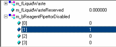
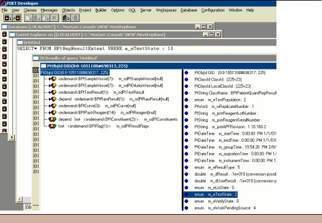
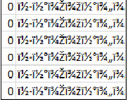

Troubleshooting Software Error Messages
Purpose
This document provides troubleshooting information for some specific, known, software issues. This document will be updated as new issues or resolutions are identified. Where appropriate, links to recommended recovery procedures are included or work around instructions are provided.
Software Revision Information
Refer to the Software Release Notes in the UniCel DxI Service Manual and the Miscellaneous Support Plans in the Access Systems Applications Database for information on software revisions.
Assertion Errors
| Error | Description | Resolution | |||||||||
|---|---|---|---|---|---|---|---|---|---|---|---|
|
Debug Assertion Failed! Program: C:\AU\Tcontrol.exe File: C:\\WorkFolder\9\s\Instrument\AU\DeviceObjects\tempobj\Temperature.cpp Line: 329 Expression: pDot |
Residual data from a previous software installation prevents AUObj from launching after loading new software. |
|
|||||||||
|
MFC Asserted: mtex.cpp(93): Assertion failed!
This software V4.4 issue occurs when enabling a disabled pipettor. Preventing the issue - Do not reboot the AU with disabled pipettors when pressure sensor calibration has failed. |
After five consecutive pressure monitoring errors, the system sets the Pipettor X requires pressure calibration flag in the specific.ini file and disables the pipettor.
or The user selects to disable a pipettor after failing pressure calibration. then The user reboots the instrument while a pipettor is disabled. Later when attempting to enable the pipettor through the UI, the AU notifies the UI regarding the need for calibration and looks for additional information. Since the pipettor is still disabled on the AU side, the information is not available and the AU software exits or crashes. |
Select to enable the pipettor in the UI. Use NVmEditor on the AU to enable the pipettor. Launch the AUobj program. Calibrate the sensor.
 or Select to enable the pipettor in the UI. Edit the specific.ini file on the AU to have "SensorCalibrated=Yes" for the pipettor. Launch the AUobj program. Calibrate the sensor. If a hardware error is preventing the pipettor from enabling (pump, valve, pressure sensor, failure to wash, or ultrasonic error), then leave the pipettor disabled until the hardware error is resolved. |
|||||||||
| AU Assert dialog displays on the console followed by an idle timer error. | The AU software has asserted. |
|
|||||||||
|
For DxI Software 5.2 and below only: AU terminatedMFC ASSERTED c:\program files\microsoft\sdk\include\alt30\altbase.h(474): Assertion failed: p!=0 |
The AU software has asserted. |
|
|||||||||
| BAssertEvent(allAus.GetNamedAU(ppAUNames[0], pAu) >- 0 | Each time the user tries to print, this error message is generated. The message can also occur when the user enters the System Configuration screen. | Select
. Check that the registry keys are correct.
|
|||||||||
| Console stuck on
Configuring parameters... message.
The Event Log displays the following as three separate entries:
|
Search the AULog*.txt for:
(41), Send Request INSTSETRACKID..., This message is repeated multiple times, indicating that the AU is not handling the INSTSETRACKID correctly. |
|
|||||||||
| Win32 (SEH) Exception | This Event Log message indicates that the UI software has crashed. Database issues on the PC or an unhandled communication from the instrument can cause this problem. |
|
|||||||||
| BAssertEvent(pSampleTube != NULL) | An in-progress sample tube is missing information | Change the status to not in-progress.
Use these OQL searchs to find in-progress reps. In the query window type SELECT* FROM BPtRepResultExtent WHERE m_eTestState < 10or SELECT* FROM BPtSampleTubeExtent WHERE m_eSampleTubeState < 5 |
Backup Failed Errors
| Error | Description | Resolution |
|---|---|---|
|
System cannot find the file specified |
This error can occur if the USB flash is not recognized by the user interface or named correctly. The error can also occur if the (E:) drive and (D:) drive are swapped. This happens more frequently on the Windows 8 console PC because the USB CD drive is an external device and sometimes it is installed after the USB flash drive. |
Check the USB flash (E:) drive to ensure its name is properly named "BACKUPDRIVE." For Windows XP System with DxI Software 5.2 and below:
For Windows 8 System with DxI Software 5.3.1 and above or Windows 10 System with DxI Software 7.2 and above:
If the USB flash drive name is correct, but it was plugged into the console PC after the user interface was launched, then
Check the USB flash drive to ensure its drive letter is correct. The default USB flash drive letter is (E:). For Windows XP System with DxI Software 5.2 and below: Change the USB flash drive letter if it is swapped or incorrect (example: USB flash drive letter is (F:).
For Windows 8 System with DxI Software 5.3.1 and above or Windows 10 System with DxI Software 7.2 and above: Change the USB flash drive letter if they are swapped or incorrect (example: USB flash drive letter is (F:).
|
| Backup Failed | This error can occur if the USB flash is full, write-protected, defective or the wrong type of USB drive. |
Check the USB flash drive's free or available space. The USB flash drive has a limited space of 8 G or 16 G. For Windows XP System with DxI Software 5.2 and below:
If the USB flash drive is failing backup and suspected to be affected by a virus, then remove the virus in the drive and the entire system. See USB Drive Malware Scan and Removal for more information. |
Copy to Disk Errors
| Error | Description | Resolution |
|---|---|---|
| Copy to Disk file showing incorrect characters.
 |
This tool is for Beckman internal use only.
Only affects Japanese and Chinese copy to disk files from DxI system software V4.6 and V4.6.1. Copy to disk files are only compatible to Microsoft Office 2010. |
|
Database Errors
| Error | Description | Resolution |
|---|---|---|
| A database error (code = -2017) occurred. | This Event Log message indicates a database consistency issue. |
|
| A Database error (code = 2041) | The database is currently locked. Waiting for database access. A similar event in the event log will include a Count field.
This Event Log Message or pop-up is benign if it occurs rarely. Typically a PC reboot or UI relaunch will resolve the issue. |
If this error occurs immediately after a PC reboot:
Note: When rebooting the Privacy & Security compliant Windows 8 or Windows 10 PC, you must enter security password "Access2Admin" when prompted to launch Windows.

|
| Database error. | This Event Log message indicates that the database is corrupt. The index file is corrupted. |
|
| the database already exists | This error occurs when reorganizing the database, or during the automatic reorganize after loading software. | If there is a
the database already exists error, then delete the
C:\nexgen\console\drw\nexstepbase\objects.reo file.
Automatic database maintenance occurs after version 4.4 and above. |
| Inconsistent database object(BPtCalibratorSample) | This message occurs as a result of deleting a calibrator lot. It is posted to the Event Log during Consistency Check. Consistency Check reports any inconsistencies to the Event Log. Therefore, this will only be reported after performing an Consistency check. | This harmless Event Log message occurs after a consistency check repair. No action is required. |
| Inconsistent database object(BPtControlSample) error message posted in the Event Log after running consistency check. | This message occurs when a calibrator lot is deleted. A consistency check reports any inconsistencies to the Event Log. Therefore, this message is only reported after performing a consistency check. | This harmless Event Log message occurs after a consistency check repair. No action is required. |
| Jammed Critical Events on IDS_AU_NEXGEN_RACK_UNLOAD. Database inconsistency | The inconsistent object cannot be found in the database. Database recovery is not enabled. The index is off, most likely due to a system power failure. |
|
| MFC Exception, GetNamedAU | A "GetNamedAU" error will occur when selecting Download if the system ID does not match the instrument serial number. |
|
| MFC Exception, A database error (code = -2611) occurred: The data record has an incorrect Checksum. | A database object is corrupt. This may occur as a result of cycling the power to the PC when communication between the PC and AU is active.
Note: When rebooting the Privacy & Security compliant Windows 8 or Windows 10 PC, you must enter security password "Access2Admin" when prompted to launch Windows.
|
Reorganize the database.
Note: Refer to the
Software: Database - Reorganizing Database (DxI and Access 2) procedure.
|
| MFC Exception, bNexGenInstrument.cpp bUIApp.cpp AUCom~2.exe | UI exits when launched. This error happened after a PC replacement where lower software version was loaded into a system that had higher software version on the AU.
Note: When rebooting the Privacy & Security compliant Windows 8 or Windows 10 PC, you must enter security password "Access2Admin" when prompted to launch Windows.
|
Software version mismatch. Load the latest software. |
Event Log Messages
| Error | Description | Resolution |
|---|---|---|
A combination of one or more of these messages occurs in the Event Log:
|
This error indicates an issue is causing sample scheduling delays. |
|
| Broadcast download not allowed | This error can occur if DxLab is uninstalled but the DxI registry settings are not changed.
Note: DxLab was a very limited field product launch.
|
If the DxI is no longer on DxLab, then:
For Windows XP:
For Windows 8 or Windows 10:
Note: When rebooting the Privacy & Security compliant Windows 8 or Windows 10 PC, you must enter security password "Access2Admin" when prompted to launch Windows.
|
| Error from CheckOutHardware: DAQC board failure Error Code = -858993460. | AUObj.exe does not launch because an initial electrical scan through the upper left card cage detected a low-level PCB failure.
The UI and AU can ping. Communication is still available using Desktop Share. Shutting down and relaunching AUObj.exe produces this error message continuously on the AU screen. Temperature and pressure control do not initiate. |
The DAQC PCB is either defective or has poor contact with the backplane PCB. If reseating the DAQC PCB does not resolve the error, then replace the DAQC PCB.
Note: Defective ribbon cables or loose cables in the upper left card cage do not cause this error.
|
| Failed to synchronize clocks | The instrument is in Not Ready mode. The time zones on the AU and UI are different. If the time zones are the same, then the UI automatically synchronizes the AU clock. |
For Windows XP:
For Windows 8 or Windows 10:
Note: When rebooting the Privacy & Security compliant Windows 8 or Windows 10 PC, you must enter security password "Access2Admin" when prompted to launch Windows.
|
| LED Panel: LED Interface: Device Reports Error During No Operation | The reagent storage interface PCB is not communicating.
The AU status LED panel was connected to the reagent storage interface PCB. Software can post LED panel errors when there is an interface PCB issue. |
In one case, a shorted internal bar code reader damaged regulator U8 and the 5 V DC local was at 3 V DC. |
or
when an LIS download message contains a test order record without any test orders. |
This error is caused by the DL2000 or Remisol sending a clear cup reflex order to the DxI. The DxI does not support clear cup reflex orders.
|
For Remisol Advance: Select the checkbox that prevents downloading clear cups messages.
For Datalink: Identify if it is the LIS or the DL2000 that triggers the reflex orders. If the reflex occurs at:
|
| The solid waste door was open during initialization | The door appears to open and close as designed but the door not closed error still occurs intermittently. |
|
|
Subsystem failed to meet deadline (Software 4.3 and lower)
Subsystem failed to meet deadline: Timing issue (software V4.4 and higher) Subsystem: WashWheelDevice: Wash WheelOperation ID: T_AdvanceThread Name: WWDispenseEvent Code ID: 0x00005347 |
This error is specific to the AU being powered up for a couple of months without being rebooted. The issue is either:
|
|
|
Subsystem failed to meet deadline" (Software 4.3 and lower)
Subsystem failed to meet deadline: Timing issue" (Software 4.4 and higher) Subsystem: Sample Pipettor. |
The new optimized wash has a synchronization check for the completion times of the sample pipettor z, the internal wash, and the external wash. If the delta is more than 425 milliseconds, then a subsystem failed to meet deadline error occurs. This error indicates that the peri-pump is not rotating at normal speed or is stalling. |
|
|
Your system is running low on virtual memory...paging file full. (pop-up seen on the AU desktop)
LAS samples are processed OK, but SPU loaded racks and samples are delayed or not processed. |
This error is specific to the AU being powered up for a couple of months without being rebooted. The issue is either:
|
Shutdown and restart the AU. |
Initialization Errors
| Error | Description | Resolution |
|---|---|---|
Note: When rebooting the Privacy & Security compliant Windows 8 or Windows 10 PC, you must enter security password "Access2Admin" when prompted to launch Windows.
The instrument status in the user interface is red with no text, is stuck configuring parameters, or does not transition into the Ready mode. |
This error message is confusing. The specific.ini file does not have a problem and the software does not need to be loaded.
The machine control program on the AU is not launching or the network is not connected. The user interface cannot communicate with the AU to get the instrument serial number from the specific.ini file.
|
Note: Refer to the
Software: Troubleshoot Communication Loss Between AU and UI procedure.
Perform these steps if these criteria are met:
For Windows XP:
For Windows 8:
|
| The user interface launches, but exits when the AU initializes. | The instrument is sending sample information that confuses the database software. |
|
|
AUObj.exe has generated errors and will be closed pop-up in the AU desktop.
The machine control program exits (crashes) when started. The trace file indicates a sample pipettor error. The Event Log does not specify an error cause. |
This issue can be caused by enabling the dual gantry and long pipettor (gantry) configurations in specific.ini at the same time. |
In the specific.ini file, check that the dual gantry and long pipettor settings are not set to Yes.
|
| The AUObj.exe machine control program exits (crashes) when started. | The Event Log might include
Passenger Exchange Failed .. messages and also might have a
No communications with the AU message.
Software is looking for an RV in the sample pick-and-place, which often causes the machine control program on the AU to exit. |
|
| The instrument initializes into Paused mode and goes to Ready when Resume is pressed. | Vessels are present for which tests were aborted with SYS flags.
The instrument AU folder contains a corrupt file. |
|
|
The software must see at least one bottle of substrate present to initialize correctly. This error is common at install or after decontamination. | Load substrate and initialize the instrument. |
|
Error from CheckOutHardware
Bad MCC board = 0 Error Code =21 |
|
|
| The AU NT boot halts with a
Press F1 to resume message on the AU display.
These errors can also occur:
|
The AU CPU CMOS settings are incorrect.
CMOS issue also causes an Error from CheckOutHardware Bad MCC board = 0 Error Code =21 error. |
|
| The RV status is 0 RVs in the user interface Supplies screen and 0 RVs in the instrument Status screen, but the RV hopper is full, there are no jams, and the sensors and MCC inbits/outbits check OK. | Low compressor pressure during startup (an air leak) caused a low-pressure error during the instrument model startup. This error (for some unknown reason) disabled the RV-full sensor in the RV hopper. The RV supply counted down to zero and did not reset to >1000 when RVs were added. | Restart the machine control program on the AU. Check and resolve system errors.
If running samples, try removing and reinstalling both buffer supply boxes to force a supply update. |
|
For DxI Software 5.2 and below only:
NV Memory Failure at byte #0 during system startup (pop-up and also in the trace file). |
This error also locks up the AUObj.exe program. The AUObj process must be end-tasked using the Task Manager. The memory test also fails in the NvmTest.exe program. If NVRAM is simulated in specific.ini for troubleshooting, then a DAQC board failure Error from CheckOutHardware: DAQC board failure Error Code = -858993460 might be posted next. | A bad NVRAM PCB has not caused this error. It has been fixed by reseating the CPU PCB in the upper left card cage. Sometimes the PCB reseats better when the COMC PCB above it is removed. It is also possible for the hold-down screws to pop the CPU PCB out of its socket. |
| The following unknown processes are currently running:
MSTSC |
An open desktop sharing connection to the AU when launching the UI causes this error. | Select OK. The error is normal and harmless. |
| The following unknown processes are currently running:
PRONOMGR |
This error is left-over from the XP upgrade of a No-Dot PC with an added dual NIC. In NT, it was named ProMon. Refer to the Disabling ProMon procedure for details. | Find a green icon for ProMon near the clock at the bottom right corner of the display. Open the console, uncheck the Display in task bar option, and then exit the application. Reboot the PC to confirm that the issue is corrected. |
Software Install Errors
| Error | Description | Resolution |
|---|---|---|
|
Current version of the console software is newer than the version on the installation disk. Installation Failed. or Cannot open Events Database. Poet Error -2077. The dictionary time stamp does not match the database time stamp. |
The system version information is newer than the version being installed.
|
For Windows XP System with DxI Software 5.2 and below: If the software being installed is not really an old version, then delete the software version file located at C:\ NexGen\ Console\ SystemVersion.txt on the PC console. Reload the software. Perform these steps to demote a system to use an older software version.
For Windows 8 System with DxI Software 5.3.1 and above or Windows 10 System with DxI Software 7.2 and above: If the software being installed is not really an old version, then
Note: DxI Software 5.3.1 is compatible with Windows XP and has new drivers for all motor devices. If it was installed on Windows XP System, then it cannot be demoted to use an older software. To use an older software, then
|
| APF disk does not contain valid APF information, APF disk not recognized, or Wrong drive | This can occur if the (E:) drive and (D:) drive are swapped. This happens more frequently on the Windows 8 console PC because the USB CD drive is an external device and sometimes it is installed after the USB flash drive. This can also occur if the APF Load Path is assigned to the wrong drive. |
Check the CD drive and USB flash drive to ensure their drive letters are correct. The default CD drive letter is (D:) and the USB flash drive is (E:). For Windows XP System with DxI Software 5.2 and below:
For Windows 8 System with DxI Software 5.3.1 and above or Windows 10 System with DxI Software 7.2 and above:
|
| APF update attempt to a previous APF revision fails | System software has protection features to prevent customers from installing a lower APF. |
|
|
For Windows XP System with DxI Software 5.2 and below only: An error occurred in the move data process |
The database was not updated at the end of the software installation. |
Shut down the POET Object server during software installation.
Note: If the PC is rebooted before the software installation is complete, then the console PC IP address updates to 192.168.2.3.
|
|
For Windows XP System with DxI Software 5.2 and below only: Debug assertion failed! Program: C:\DOCUME~1\user\LOCALS~1\Temp\_ISTMP6.DIR\_IN55576._MPFile c:\Builds\46\DxI_Iware\DxI_v4.6.1\Sources\Console\InstallUtil\BInstlalUtility.cpp Line 1405" |
The software install process checks the AU trace files to determine the instrument mode. If the process cannot determine the mode, then this error is generated. |
|
|
Instrument has not been commissioned
Manufacturing alignments not done |
Note: The original copy of the specific.ini file is no longer coming with the instrument. The file is stored in the AU folder of the original AU hard drive.
|
|
| No communications between the AU and the user interface on the console PC but the PC can communicate to the AU with Desktop Share. | This issue is sometimes seen after replacing a hard drive.
Possible issues:
|
|
| Pop-up message The system is in the Running or the Paused mode. The system must be in the Ready or Not Ready mode for the installation to proceed occurs when the instrument states Ready mode. | Most likely, the console PC is not displaying the correct instrument status due to jammed critical events. | Clear jammed communications.
Note: Refer to the
Software: Clearing Jammed Critical Events procedure.
|
| The Instrument halts software installation. |
The AU machine control program has messages waiting to be stored in the PC database. The installation protocol identifies this issue and halts the installation for user intervention. |
Caution: In these steps, do not remap the reagent supplies before restoring. Remapping can reset all onboard reagent pack counts to 50 in the NVRAM or the AU hard drvie.
|
Test Request Errors
| Error | Description | Resolution |
|---|---|---|
| Supply required icon red, and the reason is Run Matching required. | If low volume matching has not been completed, assays do not run after completing pipettor matching. | Run low volume matching. |
|
The UI language was changed, and the language affects maintenance rack sample scheduling. Pipettor scheduling for System Check is on random pipettor numbers and also takes about twice as long to run. The pipettor run order on a System Check should always be:
DxI 800: 2, 1, 3, 4, 2, 1, 3, 4,... DxI 600: 1, 2, 1, 2, 1, 2.... |
Restart the PC or UI after a language change.
The sample tube ID is used to determine whether the tube is a System Check sample tube or not (i.e., washed, unwashed, ...). Once the sample ID is assigned, changing the language does not clear the old assignment. The language causes the software to fail to recognize the rack as a System Check rack. The software does not setup the tests correctly or run the correct replicates out of the correct SVs. Note: When rebooting the Privacy & Security compliant Windows 8 or Windows 10 PC, you must enter security password "Access2Admin" when prompted to launch Windows.
|
| Bad or erroneous results on dilution assay. | The RLUs seem correct, but the results are not within expectations because of an incorrect dilution factor. | Enter the correct dilution factor for that specific assay. |
| QC tests stuck In-Progress | QC tests are stuck In-Progress. |
|
| The rack is loaded, so you can no longer edit this request | This message is posted when a rack is loaded while the test request window for it is still open. | Before loading the rack, press Back or otherwise exit the Test Request window. |
| The requested task is unavailable due to a conflicting operation. | If a task is in progress when the instrument loses communication to the PC, then the database is waiting for a response that is not possible and cannot proceed to another task. |
Restart the PC to clear the software. Restarting the PC guarantees that all processes have stopped. Note: When rebooting the Privacy & Security compliant Windows 8 or Windows 10 PC, you must enter security password "Access2Admin" when prompted to launch Windows.
|
| Stuck In-Progress Calibration Rack | Stuck In-Progress Calibration Rack | Delete stuck racks.
Note: Refer to the
Software: Deleting Racks procedure.
|
| Unable to order reflex tests | Reflex conditions are not entered. | Enter the reflex conditions. |
User Interface Errors
| Error | Description | Resolution |
|---|---|---|
| Event Log messages disappeared or are not present. | The Event Log displays the events based on the system ID. The new ID has no events. | Change the System ID in the System Setup window back to the previous number.
Note: The default is the instrument serial number. The Event Log messages for that ID redisplay.
|
| The Supply screen flashes (repeating every second). The operator cannot load substrate. | The substrate load processing software is confused, possibly because of a broken sensor. |
|
| The AU instrument time reverts day and month format, causing packs to be discarded that are not expired. | A Windows setting on the console PC can cause the AU time to reverse the month and day.
When the AU reboots, it checks the time with the user interface of the console. The time gets converted through the Time/Clock and Regional and Language Options before going back to the AU. This issue was seen in Scotland after daylight savings time, the Regional and Language Options were set to English (United Kingdom). |
For Windows XP:
For Windows 8 or Windows 10:
|
| The Event Log display flashes continuously.
A reagent pack was just loaded and it has ??? status. This can happen for substrate supply also. "???" packs |
The NVRAM or the AU hard drive on the AU is corrupting the pack or supply barcode information when scanned, and then sending the corrupt information to the UI, which then rejects the information. The AU resends the information once per second causing the Event Log to flash. |
|
| The user interface flashes continuously after an APF update. | A reagent pack is loaded in the AU for an assay that the APF update has deleted. | Recovery options:
A. Restore from backup:
B. Use the AU to refresh the packs.
|
| The user interface is running slowly or has a slow blue status completion bar when entering a window. | An excessively large database (>20 MB) can cause this error. |
|
Windows-related Errors
| Error | Possible Causes | Resolution |
|---|---|---|
| The AU password has been changed |
Phase 2 of the Windows XP upgrade was forced without entering the commands to update the registry. If the password expired and was changed, the password must be changed back to tech. |
|
| The PC boots up to the Windows net login screen and requests a user and password. | Possible causes:
|
|
| The user is unable to close task manager. Task Manager has no tabs or [X] to close the window. | The task manager was set into the smaller screen version by double-clicking the edge. | Double-click on the gray border on Task Manager. |
| The customer is experiencing slowed UI response on a Windows XP system. | The Lexmark printer manager application comes on a CD in the Lexmark printer box and should not be loaded. Our Windows XP embedded software does not have some of the processes that the printer manager software tries to use. The printer manager software locks up the PC trying to find the missing processes.
Installation Wizard pop-up for Lexmark printer LMAB INSTALLER A virus (spread through the USB) can also slow down the console. In previous situations with viruses, the user interface tends to slow down when RMS is used to connect to an instrument. |
Lexmark printer manager troubleshooting:
Check for a green icon near the clock at the bottom right corner of the Windows desktop. If the green icon is for the Lexmark printer manager application, then:
If right-clicking the icon does not work, then:
If the Instrument is on V4.1 to V4.4 software, then scan the USB for viruses. See
USB Drive Malware Scan and Removal for more information.
Note: Software V4.4 contains similar changes to prevent the PC from auto-launching USB files.
|
| There is an SQL server error when trying to print from the UI.
Windows printer test pages print OK. |
The user interface trying to print to a printer that no longer exists causes this error. It can happen after OS Recovery or after database restoration, when UI printing is attempted before assigning a printer in the UI. |
Additional Information: The issue can happen after a database restoration or OS Repair, when the UI printer does not match one of listed printers that is stored in the PC registry. OS Repair replaces the registry with a default version that might not contain the printer name that was assigned in the UI previously. Until the printer choice in the UI is reset, all UI print jobs could be sent to a printer that does not exist, causing a persistent printing problem. Even after the correct printer is chosen, nothing prints and there is an SQL server error each time printing is requested from the UI. |
| RUNDLL
error loading fldrclnr.dll Or, fldrclnr.dll not found! No communication to the AU, because a pop-up message on the AU desktop keeps the machine control program from automatically launching. |
The Run Desktop Cleanup Wizard every 60 days option has been selected in the Desktop properties. This application is not included in the Windows XPe software used on the AU. | Right-click on the desktop. Select , and then de-select the Run Desktop Cleanup Wizard every 60 days option. |
Troubleshooting Procedures
| Procedure | Steps |
|---|---|
| Change the AU IP address. |
For Windows XP:
For Windows 8 or Windows 10:
|
| Resolve NexStepBase Checksum errors |
|
| Touch and Toss All |
|